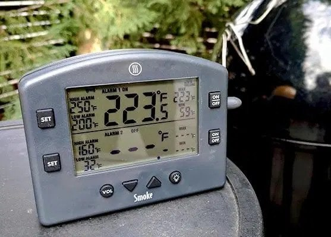
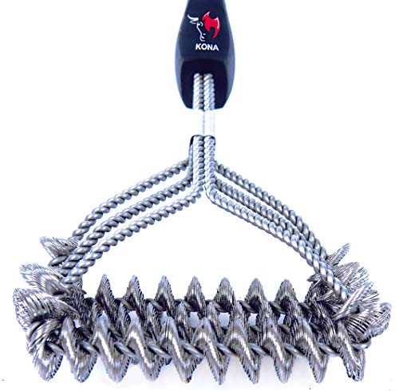
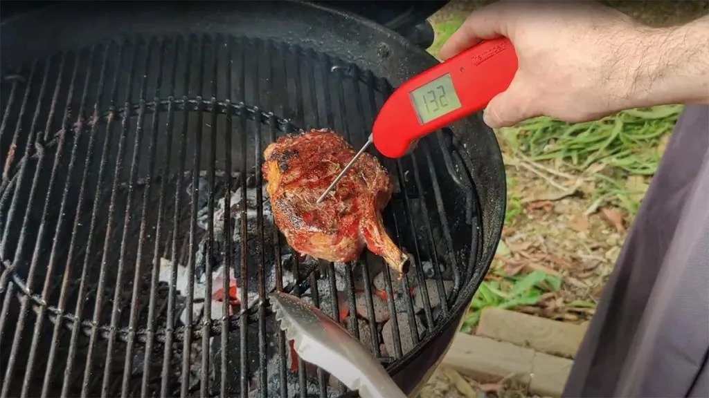
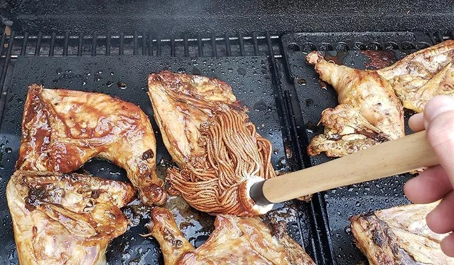
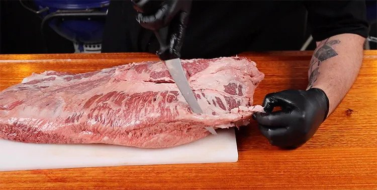
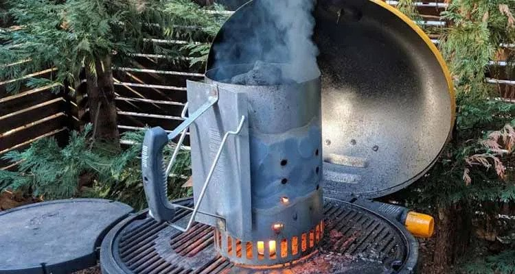
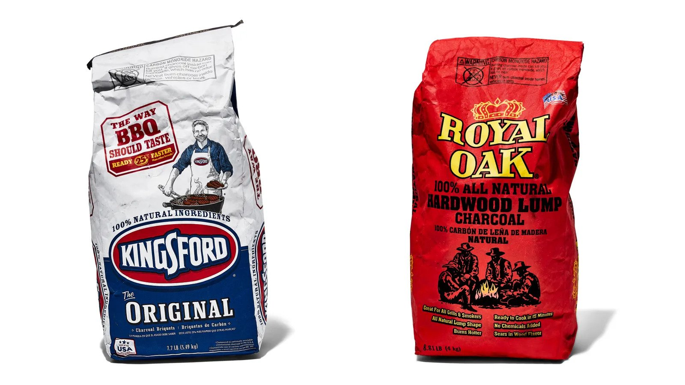

When I Barbecue Everyone Loves To Swallow My Meat!
People spend so much time worrying about what smoker to buy or which type of charcoal to cook with they tend to forget about accessories.
Investing in the right accessories for your grill or smoker doesn’t just make your life a lot easier, it’ll improve the quality of your BBQ too!
You’ll regret not investing in these smoker and grill accessories sooner!
To round out your barbecue tool kit check our guides to the best store-bought rubs and sauces and books.
1. A quality wireless meat thermometer
Our top accessory is a no-brainer if you like to cook barbecue low and slow. If you’ve tried to BBQ without a meat thermometer I feel sorry for you!
If your smoker has a built-in lid thermometer you’re not exempt either. These are notoriously inaccurate. The best solution is a dual probe bbq thermometer that lets you measure the temperature in your cooker and the temperature of your meat from the same device.
Preferably with wireless functionality so you can check your temps from the comfort of your couch. Remember that low and slow is all about consistent temperature.
2. Heat resistant BBQ gloves
Your primary goal when you grill and barbecue should be to create delicious smoked meat.
A good secondary goal is to avoid burning your hands.
The first time I used a Weber Chimney Starter I got to enjoy a nice shower of scolding hot sparks on my bare hands.
I use a pair of heat resistant BBQ gloves whenever I’m handling charcoal. Gloves are also useful for turning food without damaging the bark you work so hard to achieve.
3. A BBQ grill brush to keep your cooking area clean
You don’t want to be the person who spends over $1,000 on a Kamado Joe but won’t spend $10 bucks to keep their fancy grill clean.
Get into the habit of cleaning your grill with a good grill brush after every cook and your life will be a lot easier.
1: After a cook, crank the temperature for around 10 minutes and then clean with a wire brush while all the built-up meaty gunk is fresh.
2: Before the next cook take the inside grate and give it a good cleaning with water while your smoker or grill is coming up to temperature
3: Put the grate back into the grill/smoker and let it get nice and hot before putting food on.
This way you make sure there are no stray wires getting left behind by the brush and making their way into your food (this is rare but you really don’t want it to happen once!).
4. Sturdy BBQ Tongs
Hold on a second, didn’t we already mention the importance of a thermometer at the top of this article?
An instant-read meat thermometer actually serves a different purpose.
A WiFi thermometer is for monitoring the temp in your grill and of your meat during long cooks.
An instant-read thermometer is crucial for grilling, especially when cooking steaks where every few degrees can have a big impact.
I also find these useful when cooking low and slow as you can quickly test the temperature at multiple different points.
6. A basting brush/mop
Some recipes call for basting the meat with a mop or marinade to add flavor and keep the meat moist.
Having a dedicated mop for barbecue is useful because of the longer handle and a more durable head.
The brush you might already have in your kitchen cupboard would probably burn. Not the kind of flavor you want to impart!
7. A quality butcher’s block
A large butcher’s block or cutting board is an essential accessory for any barbecue kitchen.
Even an average-sized brisket won’t fit on your standard sized kitchen cutting board.A quality wood board will also help keep your knives sharp.
8. A sharp boning knife for trimming
Out of all my BBQ knives, I find myself reaching for my boning knife the most often.The blade shape makes it perfect for trimming the fat cap on a brisket or tidying up a slab of ribs.
9. A slicing knife for serving perfect portions
If you need a boning knife to trim your meat up before cooking, a slicing knife is just as important for making the final product presentable. A sharp slicing knife can actually make your barbecue taste better, especially when slicing brisket or tri-tip as the right slice will improve the texture.
10. A charcoal chimney fire starter
I would consider this essential if you grill or smoke with charcoal, otherwise it’s not needed.
Unless you like painstakingly stacking your charcoal over chemical fire starters a chimney starter is your obvious choice. And if you are dousing your charcoal in lighter fluid please stop now!
Just pour your charcoal into the chimney starter, scrunch up a few paper towels with a few teaspoons of oil and then light. Place the chimney over the ball of paper towels and you should be good to go with 10-20 minutes.
There are different kinds of charcoal? Yup. You’re damn right there are. Like sandwiches, insurance plans, and automobiles, charcoal is no one-size-fits-all beast.
You’ll find two main types of charcoal out there in the world, and they lend themselves more appropriately to different grilling situations. So before you give it a light, you need to know what you'll be cooking. Here are the two main types of charcoal and what you should be using them for:
Charcoal briquttes are probably what you picture when you think about charcoal. Typically the cheaper option, they're uniform nuggets of dense, packed sawdust, and they offer an even, predictable, long-burning heat that’s great for grilling larger pieces of meat that take a long amount of time to cook through.
Because briquettes aren’t 100 percent wood (they’re packed with binders to hold their shape), they're technically the less natural option, but if you’re planning on grilling all afternoon, consider these nuggets your economical, dependable, workhorse.
Hardwood lump charcoalis your other option—and it's all about flavor. Made from irregularly-shaped pieces of real hardwood (no filler or binding agents—just trees!), it burns hotter, less evenly, and more quickly than briquettes. Hardwood lump imparts flavor on the food you’re grilling because it’s an ingredient in itself: Depending on what kind of hardwood lump you're using, be it mesquite, applewood, or pecan, your food will taste taste (and smell) different.
We use hardwood lump for quick, hot-and-fast grilling (say you're grilling bread or sliced squash or hot dogs and burgers), but here's a pro tip: You can also throw a handful on top of already-burning briquettes to create a plume of aromatic wood smoke so that you can have some of the benefits of both types of charcoal.
To summarize, here's our rule of thumb: If you’re grilling something that’s quick-cooking, like thin-cut pork chops or smaller vegetables like string beans, asparagus, or snap peas, you want the high-heat fire of hardwood. If you’re going low and slow on a whole chicken or a large steak, briquettes are your best friend. Either way, dinner’s better when you know you’re using the right charcoal.
Now, don’t just go throwing any type of wood into your outdoor smoker. Keep in mind, some wood may replace the smoked meaty flavor with a bitter charcoal taste. Therefore, some woods to avoid include cypress, cedar, eucalyptus, elm, fir, pine, spruce, redwood, and sycamore. Additionally, avoid using painted or treated pieces of wood to smoke your meat, as they may release toxins into your food.